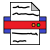

Cursed Calculator
6/30/21
Calculators are boring. So I made Cursed Calculator. Its a fun little project I made and It works by Generating a random number between 0 - 100.

PinGenerator
5/16/21
I was having trouble making a pin, So i got the idea to make a random pin generator.

WinTerminal
4/22/21
WinTerminal is a custom command prompt created by:
NoobBit It is Mostly used for developers. Creating files, or checking the time there is tons to do with WinTerminal. CommandShell (and PowerShell) is not a very great program for developers and it slows down progress.
Notepad
4/22/21
Notepad is a custom command notepad created by:
Me I created this project as a fun little project to work on when I'm free. I am trying to make a notepad app that is better that notpad its self!?
AudioPlus
5/12/21
AudioPlus Allows you to read a file

File-Reader
5/12/21
File-Reader is a simple program i made in C++ (You can find cl.cpp in the /src directory). It can read and write files. Its just a simple app I just made for fun!
 NoobBit
NoobBit